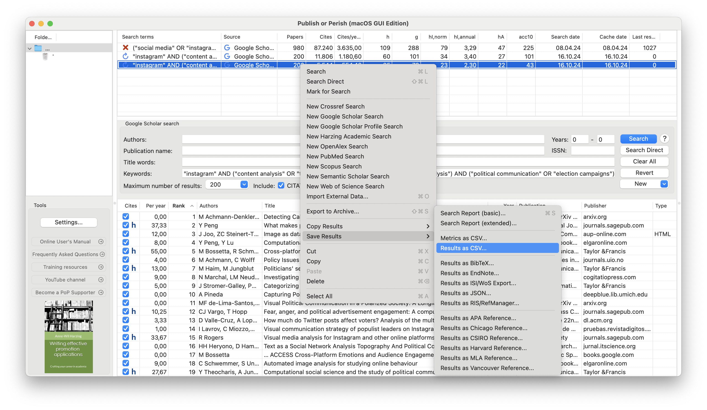

We will introduce you to the use of GPT, a state-of-the-art language model, to assist in extracting key information from research paper abstracts. This technique will not only streamline your literature review process but also serve as a practical introduction to automated text analysis—a topic we’ll delve deeper into in upcoming sessions.
By integrating Python with the OpenAI GPT API, you’ll learn how to automate the extraction of features such as research questions, methodologies, data sources, populations, and scientific disciplines from abstracts. This hands-on experience will demonstrate the potential of LLMs.
What You’ll Learn:
Automating Literature Review Tasks: Use GPT to quickly identify and summarize key aspects of academic papers.
Practical Python Skills: Enhance your coding abilities by working with APIs and handling data within Jupyter notebooks.
Foundations for Text Classification: Gain insights that will prepare you for our future sessions on automated text classification techniques.
By the end of this session, you’ll have a functional literature review assistant powered by GPT, positioning you well for the advanced text analysis topics ahead.
Warning
This notebook provides a quick introduction to automated text extraction using GPT. Note: We are not evaluating the results in this session, so do not use this notebook for production purposes or in your actual project reports! Additionally, we use certain shortcuts for demonstration purposes—for example, removing search results that lack DOIs.
Prepare your Literature List
Use Publish or Persih, enter your search term, and export the results as CSV file.

Right click on the search, select Save Results > Results as CSV…
Start the notebook on Colab and upload the CSV file. The notebook is available: * GitHub *
Setup
At first we need to install necessary packages. Hit run and wait.
Install Packages
Preparing metadata (setup.py) ... done
━━━━━━━━━━━━━━━━━━━━━━━━━━━━━━━━━━━━━━━━ 50.6/50.6 kB 3.8 MB/s eta 0:00:00
━━━━━━━━━━━━━━━━━━━━━━━━━━━━━━━━━━━━━━━━ 386.9/386.9 kB 15.5 MB/s eta 0:00:00
━━━━━━━━━━━━━━━━━━━━━━━━━━━━━━━━━━━━━━━━ 56.7/56.7 MB 15.6 MB/s eta 0:00:00
━━━━━━━━━━━━━━━━━━━━━━━━━━━━━━━━━━━━━━━━ 319.8/319.8 kB 22.8 MB/s eta 0:00:00
━━━━━━━━━━━━━━━━━━━━━━━━━━━━━━━━━━━━━━━━ 94.7/94.7 kB 6.2 MB/s eta 0:00:00
━━━━━━━━━━━━━━━━━━━━━━━━━━━━━━━━━━━━━━━━ 76.4/76.4 kB 5.9 MB/s eta 0:00:00
━━━━━━━━━━━━━━━━━━━━━━━━━━━━━━━━━━━━━━━━ 78.0/78.0 kB 6.3 MB/s eta 0:00:00
━━━━━━━━━━━━━━━━━━━━━━━━━━━━━━━━━━━━━━━━ 447.4/447.4 kB 31.1 MB/s eta 0:00:00
━━━━━━━━━━━━━━━━━━━━━━━━━━━━━━━━━━━━━━━━ 325.2/325.2 kB 24.1 MB/s eta 0:00:00
━━━━━━━━━━━━━━━━━━━━━━━━━━━━━━━━━━━━━━━━ 144.5/144.5 kB 11.3 MB/s eta 0:00:00
━━━━━━━━━━━━━━━━━━━━━━━━━━━━━━━━━━━━━━━━ 11.0/11.0 MB 99.9 MB/s eta 0:00:00
━━━━━━━━━━━━━━━━━━━━━━━━━━━━━━━━━━━━━━━━ 73.3/73.3 kB 6.2 MB/s eta 0:00:00
━━━━━━━━━━━━━━━━━━━━━━━━━━━━━━━━━━━━━━━━ 63.7/63.7 kB 3.8 MB/s eta 0:00:00
━━━━━━━━━━━━━━━━━━━━━━━━━━━━━━━━━━━━━━━━ 58.3/58.3 kB 4.6 MB/s eta 0:00:00
━━━━━━━━━━━━━━━━━━━━━━━━━━━━━━━━━━━━━━━━ 130.2/130.2 kB 10.3 MB/s eta 0:00:00
Building wheel for ratelimit (setup.py) ... done
Using GPT to extract information from abstracts
Now for the exciting part: Can we leverage GPT to streamline our literature review process? Here, we’ll experiment with automatically extracting key features from abstracts using gpt-4o-turbo.
Note: Feel free to test different prompts and questions to optimize results. The Promptingguide is a good resource to learn more about different prompting techniques. Use the ChatGPT interface to cheaply test prompt prior to using them with the API. Use the OpenAI Playground to optimize your prompts with a visual user interface for different settings and a prompting history (trust me, this can save your life!). See also the Text Classification chapter.
Prompts: We’re going to use the system prompt for our instructions, and the user prompt to send our content.
Import from Publish or Perish Data.
If this is the start of your review process, upload the csv file exported from Publish or Perish in the left-hand Files pane. Enter the filename in publish_or_perish_file_name. Define the output name in file_name. If you want to save the imported file in the google drive add /content/drive/MyDrive/ to the path. Skip this cell if you want to work with a file that has been imported in the past.
import pandas as pdimport numpy as npimport iopublish_or_perish_file_name ="/content/2024-10-24-Lit-Review-Seminar.csv"# @param {type: "string"}file_name ="2024-10-24-Literature-Review.csv"# @param {type: "string"}# Initialize empty DataFrameall_data = pd.DataFrame()try: all_data = pd.read_csv(publish_or_perish_file_name)# Remove missing DOIs initial_len =len(all_data) all_data = all_data[~pd.isna(all_data['DOI'])] removed_len = initial_len -len(all_data)print(f'Removed {removed_len} rows without DOI.')# Remove Duplicates initial_len =len(all_data) all_data = all_data.drop_duplicates(subset='DOI', keep='first') removed_len = initial_len -len(all_data)print(f'Removed {removed_len} duplicates based on DOI.') all_data = all_data.sort_values(by='Cites', ascending=False).reset_index(drop=True)print('Sorted Table by Cites.')# Create empty columns for Literature Review all_data["Relevant"] ="" all_data["Notes"] ="" all_data["Checked"] =Falseprint('Initialized Columns') all_data.to_csv(file_name)print(f"Success: Saved data to {file_name}")print(f'Success: Data loaded from File "{file_name}".')exceptExceptionas e:print(f"Error: Failed to load data from File. {str(e)}")
Removed 114 rows without DOI.
Removed 0 duplicates based on DOI.
Sorted Table by Cites.
Initialized Columns
Success: Saved data to 2024-10-24-Literature-Review.csv
Success: Data loaded from File "2024-10-24-Literature-Review.csv".
Read previously imported File
If you want to keep going with a former review process, we can read an uploaded file / a file from google drive. Only run one cell, this one or the above.
import pandas as pdimport numpy as npimport iofile_name ="2023-10-31-Literature-Review.csv"# @param {type: "string"}try: all_data = pd.read_csv(file_name)print(f'Success: Data loaded from File "{file_name}".')exceptExceptionas e:print(f"Error: Failed to load data from File. {str(e)}")
Success: Data loaded from File "2023-10-31-Literature-Review.csv".
In this example we’ve saved the file locally. When working with Colab, the file will be deleted when we disconnect. For colab you should link your google drive (open the files pane on the left, click the Google Drive button). Once connected, save the file in the folder /content/drive/MyDrive/YOUR-FILENAME.csv. It will be accessible through Drive, and Colab is from now on going to connect automatically to drive.
Check the imported data. We’re using pandas, the imported data is saved in the all_datavariable. head(2)displays the two top rows of the table. Additionally, we have added three columns: Relevant, Notes, and Checked. We are going to make use of them to keep track of our progress.
# Check the structure (and content) of the fileall_data.head(2)
Cites
Authors
Title
Year
Source
Publisher
ArticleURL
CitesURL
GSRank
QueryDate
...
CitesPerYear
CitesPerAuthor
AuthorCount
Age
Abstract
FullTextURL
RelatedURL
Relevant
Notes
Checked
0
764
A Ceron, L Curini, SM Iacus, G Porro
Every tweet counts? How sentiment analysis of ...
2014.0
New media &society
journals.sagepub.com
https://journals.sagepub.com/doi/abs/10.1177/1...
https://scholar.google.com/scholar?cites=18273...
175
2024-10-16 10:47:35
...
76.4
191
4
10.0
… Due to recent developments in quantitative t...
https://journals.sagepub.com/doi/full/10.1177/...
https://scholar.google.com/scholar?q=related:J...
False
1
470
M Lalancette, V Raynauld
The power of political image: Justin Trudeau, ...
2019.0
American behavioral scientist
journals.sagepub.com
https://journals.sagepub.com/doi/abs/10.1177/0...
https://scholar.google.com/scholar?cites=15892...
38
2024-10-16 10:47:35
...
94.0
235
2
5.0
… As few studies have been done on Instagram-b...
https://journals.sagepub.com/doi/full/10.1177/...
https://scholar.google.com/scholar?q=related:7...
False
2 rows × 29 columns
In the next step we are going to start our literature review: 1. We filter for the first unchecked row, ordered by the cite count. 2. We retrieve the abstract from CrossRef API using the DOI. 3. We display all information 4. We answer whether the paper appear to be relevant by entering y or n for yes or no.
For our session, the cell only runs through one row and finishes afterwards. For a real world application you’d probably like to add some kind of loop.
from crossref_commons.retrieval import get_publication_as_jsonimport jsonimport openaiimport textwrapimport IPythonimport re# Get one row: Not checked, highest Citation count.highest_cites_unchecked = all_data[all_data['Checked'] ==False].sort_values(by="Cites", ascending=False).iloc[0]index = highest_cites_unchecked.name# Retrieve Abstract from Crossrefresponse = get_publication_as_json(highest_cites_unchecked['DOI'])abstract = response.get("abstract", "")# Remove XMLabstract = re.sub(r'<[^>]+>', '', abstract)all_data.loc[index, 'Abstract'] = abstract# Display all informationIPython.display.clear_output(wait=True)title_disp = IPython.display.HTML("<h2>{}</h2>".format(highest_cites_unchecked['Title']))authors_disp = IPython.display.HTML("<p>{}</p>".format(highest_cites_unchecked['Authors']))doi_disp = IPython.display.HTML("<p><a target='_blank' href='https://doi.org/{}'>{}</a></p>".format(highest_cites_unchecked['DOI'],highest_cites_unchecked['DOI']))display(title_disp, authors_disp, doi_disp)print(textwrap.fill(abstract, 80))relevant_input =input('Relevant? (y/n): ').lower().strip() =='y'# Save user inputall_data.loc[index, 'Checked'] =Trueall_data.loc[index, 'Relevant'] = relevant_input
Every tweet counts? How sentiment analysis of social media can improve our knowledge of citizens' political preferences with an application to Italy and France
The growing usage of social media by a wider audience of citizens sharply
increases the possibility of investigating the web as a device to explore and
track political preferences. In the present paper we apply a method recently
proposed by other social scientists to three different scenarios, by analyzing
on one side the online popularity of Italian political leaders throughout 2011,
and on the other the voting intention of French Internet users in both the 2012
presidential ballot and the subsequent legislative election. While Internet
users are not necessarily representative of the whole population of a country’s
citizens, our analysis shows a remarkable ability for social media to forecast
electoral results, as well as a noteworthy correlation between social media and
the results of traditional mass surveys. We also illustrate that the predictive
ability of social media analysis strengthens as the number of citizens
expressing their opinion online increases, provided that the citizens act
consistently on these opinions.
Relevant? (y/n): y
Next, we check whether our input has been saved:
# Check the resultall_data.iloc[index]
0
Cites
764
Authors
A Ceron, L Curini, SM Iacus, G Porro
Title
Every tweet counts? How sentiment analysis of ...
Year
2014.0
Source
New media &society
Publisher
journals.sagepub.com
ArticleURL
https://journals.sagepub.com/doi/abs/10.1177/1...
CitesURL
https://scholar.google.com/scholar?cites=18273...
GSRank
175
QueryDate
2024-10-16 10:47:35
Type
NaN
DOI
10.1177/1461444813480466
ISSN
NaN
CitationURL
NaN
Volume
NaN
Issue
NaN
StartPage
NaN
EndPage
NaN
ECC
764
CitesPerYear
76.4
CitesPerAuthor
191
AuthorCount
4
Age
10.0
Abstract
The growing usage of social media by a wider ...
FullTextURL
https://journals.sagepub.com/doi/full/10.1177/...
RelatedURL
https://scholar.google.com/scholar?q=related:J...
Relevant
True
Notes
Checked
True
system_prompt ="""You are an advanced AI research assistant. Your task is to extract the following information from the given research abstract:- Research Questions- Operationalization- Data Sources- Population- Scientific DisciplinesIf any of the above information is not available in the abstract, return "None" for that field.**Output Format:**Return the extracted information in the following JSON format:{ "research_questions": "...", "operationalization": "...", "data_sources": "...", "population": "...", "scientific_disciplines": "..."}Ensure the JSON is properly formatted."""
The following lines initialize access to the OpenAI API, allowing us to make GPT requests directly from this notebook. Here’s a breakdown of each part:
API Key Setup: We retrieve the API key securely from Colab’s userdata storage. Ensure your key is stored with the name specified in api_key_name.
OpenAI Initialization: By passing the API key to the OpenAI client, we can now make requests to the API for GPT-powered text analysis.
OpenAI Basics
Information on how to set up the OpenAI API Keys is available on the OpenAI Basics page.
import openaifrom google.colab import userdataimport backoffimport json# Fetch the API key from Colabapi_key_name ="openai-forschung-mad"# @param {type: "string"}api_key = userdata.get(api_key_name)# Initialize OpenAI with the provided API keyclient = openai.OpenAI(api_key=api_key)
Next, we define the get_gpt_extracted_data function, which sends a formatted request to GPT-4 with the research paper’s title and abstract. This function uses retry logic to handle any API errors, automatically retrying the request if needed. Upon success, the extracted information is returned in JSON format, making it straightforward to parse and analyze the results.
# Retry logic in case of API errors using backoff@backoff.on_exception(backoff.expo, openai.APIError, max_tries=8)def get_gpt_extracted_data(title, abstract):try: response = client.chat.completions.create( model="gpt-4o-mini", # temperature=0, messages=[ {"role": "system", "content": system_prompt}, {"role": "user", "content": f"""**{title}** \n **Abstract:** {abstract}"""}, ], response_format= { "type": "json_object" } ) gpt_result = response.choices[0].message.contentreturn json.loads(gpt_result)exceptExceptionas e:returnf"GPT API Error: {str(e)}"
We have changed the cell to include the gpt_prompt variable, which sends the title and abstract as a user prompt. We’re using the get_gpt_extracted_data(title, abstract) method that we defined above, to send our request to the API. We expect the response in response.choices[0].message.content to be JSON. Visit the OpenAI Docs for more information.
from crossref_commons.retrieval import get_publication_as_jsonimport jsonimport textwrapimport IPythonimport re# Get one row: Not checked, highest Citation count.highest_cites_unchecked = all_data[all_data['Checked'] ==False].sort_values(by="Cites", ascending=False).iloc[0]index = highest_cites_unchecked.name# Retrieve Abstract from Crossrefresponse = get_publication_as_json(highest_cites_unchecked['DOI'])abstract = response.get("abstract", "")# Remove XML tagsabstract = re.sub(r'<[^>]+>', '', abstract)all_data.loc[index, 'Abstract'] = abstract# Display all information (before we send the request to OpenAI)IPython.display.clear_output(wait=True)title_disp = IPython.display.Markdown(f"## {highest_cites_unchecked['Title']}")authors_disp = IPython.display.Markdown(f"**Authors**: {highest_cites_unchecked['Authors']}")doi_disp = IPython.display.Markdown(f"**DOI**: [https://doi.org/{highest_cites_unchecked['DOI']}](https://doi.org/{highest_cites_unchecked['DOI']})")abstract_disp = IPython.display.Markdown(f"### Abstract\n\n{abstract}")display(title_disp, authors_disp, doi_disp, abstract_disp)try: gpt_results = get_gpt_extracted_data(highest_cites_unchecked['Title'], abstract) research_questions = gpt_results.get('research_questions', 'None') operationalization = gpt_results.get('operationalization', 'None') data_sources = gpt_results.get('data_sources', 'None') population = gpt_results.get('population', 'None') disciplines = gpt_results.get('scientific_disciplines', 'None')# Add callout block warning for Quarto about reliability warning_disp = IPython.display.Markdown("""::: warningThe following results are generated using AI extraction and may contain inaccuracies. Please review and verify the information before relying on it for further analysis.:::""") display(warning_disp)# Display the GPT result with Markdown formatting gpt_disp = IPython.display.Markdown(f"""## GPT Extracted Data### Research Questions{research_questions}### Operationalization{operationalization}### Data Sources{data_sources}### Population{population}### Scientific Disciplines{disciplines}""") display(gpt_disp)exceptExceptionas e:print(f"Error displaying GPT results: {str(e)}")relevant_input =input('Relevant? (y/n): ').lower().strip() =='y'# Save user inputall_data.loc[index, 'Checked'] =Trueall_data.loc[index, 'Relevant'] = relevant_input
The power of political image: Justin Trudeau, Instagram, and celebrity politics
This article explores dynamics of online image management and its impact on leadership in a context of digital permanent campaigning and celebrity politics in Canada. Recent studies have shown that images can play a critical role when members of the public are evaluating politicians. Specifically, voters are looking for specific qualities in political leaders, including honesty, intelligence, friendliness, sincerity, and trustworthiness, when making electoral decisions. Image management techniques can help create the impression that politicians possess these qualities. Heads of governments using social media to capture attention through impactful images or videos on an almost daily basis seems like a new norm. Specifically, this article takes interest in Justin Trudeau’s use of Instagram during the first year immediately following his election on October 19, 2015. Through a hybrid quantitative and qualitative approach, we examine how Trudeau and his party convey a specific image to voters in a context of permanent and increasingly personalized campaigning. We do so through an analysis of his Instagram feed focusing on different elements, including how he frames his governing style visually, how his personal life is used on his Instagram to support the Liberal Party of Canada’s values and ideas, and how celebrity culture codes are mobilized to discuss policy issues such as environment, youth, and technology. This analysis sheds light on the effects and implications of image management in Canada. More generally, it offers a much-needed look at image-based e-politicking and contributes to the academic literature on social media, permanent campaigning, as well as celebrity and politics in Canada.
The following results are generated using AI extraction and may contain inaccuracies. Please review and verify the information before relying on it for further analysis.
GPT Extracted Data
Research Questions
How does Justin Trudeau’s use of Instagram impact the perception of his leadership qualities among voters in the context of digital permanent campaigning and celebrity politics?
Operationalization
Analysis of Trudeau’s Instagram feed focusing on visual framing of his governing style, use of personal life to support party values, and mobilization of celebrity culture codes in discussing policy issues.
Data Sources
Justin Trudeau’s Instagram feed.
Population
Voters in Canada.
Scientific Disciplines
Political Science, Media Studies, Communication Studies.
Relevant? (y/n): y
The above output shows a formatted table listing all extracted features. In this short warm-up session on GPT we have seen one use case of the LLM: The extraction of text feautures. In future sessions we are going to dive deeper into this topic.
Save your Progress
The following line saves all progress to file_name. If file_name is a path to Google Drive you will be able to pick up your work later on.
all_data.to_csv(file_name)
Reuse
GNU GPLv3
Citation
BibTeX citation:
@online{achmann-denkler2023,
author = {Achmann-Denkler, Michael},
title = {GPT {Literature} {Review} {Assistant}},
date = {2023-10-31},
url = {https://social-media-lab.net/notebooks/literature-review-v2.html},
doi = {10.5281/zenodo.10039756},
langid = {en}
}
![]()